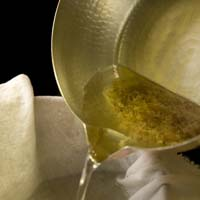
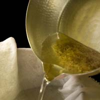

|


Basic Miso soup with potatoes and leeks |
Japanese Soup RecipesDashiThis all important soup stock forms the base for almost all of Japanese cooking, and imparts umami (the fifth taste, meaning "savory" or "meaty") to anything it graces. Luckily, it is very easy to make and fills the house with a wonderful aroma. There are two kinds: The Basic Dashi RECIPE is the most versatile, and includes a vegetarian version. You can use the Niboshi Dashi for heavily flavored miso soups. Miso soupMiso soup is so easy that it is virtually impossible to mess up. It is also wonderfully versatile, and can be made with whatever seasonal vegetables, mushrooms, tofu, meat or seafood is at hand. Miso soup can be as light, (with just a few blocks of tofu and some chopped mitsuba) or heavy (as in kenchinjiru, which is almost like a stew) as you are in the mood for. Children love its salty and rich flavor, and when tofu and rice* are added, makes a healthy and easily digestible meal for toddlers. Miso soup is made of dashi and white miso, red miso, or a combination of the two, which is known as awase miso. Another favorite of mine is inaka (country style) miso, which is chunky and goes well with earthy ingredients. The recipes below come from my experience and preference. You might try following them once, and then start experimenting to see what flavors you like. Additionally, you can use regular dashi for delicate soup and niboshi (sardine) dashi for more strongly flavored soups. I usually use regular dashi, but again, it’s a matter of preference, as there are no hard and fast rules in making miso soup. RECIPE Variations include: Tofu & Wakame, Carrots & Daikon, Potatoes & Onion, Nasu, Okra, Shimeji Mushroom, Enoki Mushroom and Asari Clam Ton-jiru (miso soup with pork and green onions)Ton-jiru is a rich and hearty pork miso soup that is usually served with tonkatsu (fried pork cutlets). It's a hearty and flavorful soup that is a favorite of meat-lovers. For this type of soup, dashi is not used.RECIPE KenchinjiruThis is based on a Buddhist vegetarian recipe and can either be made with miso, or with soy sauce and salt. My mother always made a version with pork and miso, but recently I've taken to this vegan version because you can really taste all the wonderful vegetables. Richness comes from the intense flavors of the gobo (burdock) and shiitake mushrooms and the creamy sato-imo. This hearty soup is more like a stew, and can be considered a meal unto itself when served with rice and pickles.RECIPE SuimonoSuimono means “things to sip”, and refers to clear soup. This is sometimes served at the end of a meal, or in elegant kaiseki meals, after the appetizer or sashimi course and before the entrée. The basic suimono recipe is exceedingly simple, but because of its very simplicity, it is hard to master. The flavors are so delicate and subtle that it is easy to go overboard with flavoring. When in doubt, start with the amount listed below and add from there in small quantities if you find it lacking in taste. Making good suimono also depends on the availability of fragrant herbs such as mitsuba and the rind of citrus such as yuzu. These are hard to find in the West, and unfortunately, there are no suitable substitutes. If you can’t find them fresh, use these freeze dried, or in the case of yuzu, bottled. If you are not able to find bottled yuzu, use thin strips of lemon rind. Lastly, presentation is also important for suimono. The ingredients are few and should be cut into beautiful shapes, and ideally, served in covered lacquer bowls. One of the pleasures of enjoying suimono is the fragrance that is released when one lifts the lid from the bowl. RECIPE |
|

Basic Miso soup with potatoes and leeks |